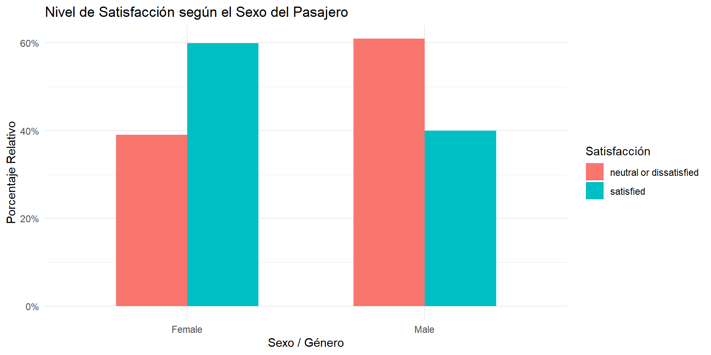

Code
library(tidyverse)
library(caret)
library(janitor)
load("datos.Rdata")
head(datos)El principal objetivo de este estudio va a ser predecir la satisfacción de los clientes con una aerolínea (no especificada) en función de su género, su lealtad, su edad, su objetivo de vuelo, la distancia de este, …
Los datos fueron recogidos de la página web Kaggle y la procedencia no está esfecificada pero se indica que son datos reales de una aerolínea.
Hay un total de 129.880 encuestados (filas) y 24 variables (columnas).
Las variables son las siguientes:
Satisfacción: Nivel de satisfacción con la aerolínea (Satisfacción, neutralidad o insatisfacción)
Edad: La edad de los pasajeros
Género: Género de los pasajeros (Femenino, Masculino)
Tipo de viaje: Propósito del vuelo de los pasajeros (Viaje personal, Viaje de negocios)
Clase: Clase de viaje en el avión de los pasajeros (Business, Eco, Eco Plus)
Tipo de cliente: El tipo de cliente (cliente fiel, cliente desleal)
Distancia de vuelo: La distancia de vuelo de este viaje
Servicio de wifi a bordo: Nivel de satisfacción con el servicio de wifi a bordo (0 en caso de no haberlo contratado, o del 1 al 5 en orden ascendente de satisfacción)
Retraso en la salida en minutos: Minutos de retraso en la salida
Retraso en la llegada en minutos: Minutos de retraso en la llegada
Vuelo cancelado: Si el vuelo fue cancelado o no (Sí, No)
Tiempo de vuelo en minutos: Minutos de vuelo
Las siguientes variables corresponden a preguntas de valoración del servicio y se miden en una escala ordinal de 1 a 5 (donde 1 representa la mínima satisfacción y 5 la máxima), figurando el valor 0 en aquellos casos en los que el servicio no fue contratado o no resultaba aplicable:
Facilidad de reserva en línea: Nivel de satisfacción con la reserva en línea
Servicio a bordo: Nivel de satisfacción con el servicio a bordo
Embarque en línea: Nivel de satisfacción con el embarque en línea
Entretenimiento a bordo: Nivel de satisfacción con el entretenimiento a bordo
Comida y bebida: Nivel de satisfacción con la comida y la bebida.
Comodidad del asiento: Nivel de satisfacción con la comodidad del asiento
Soporte en línea: Nivel de satisfacción con el soporte en línea.
Servicio de espacio para las piernas: Nivel de satisfacción del servicio de espacio para las piernas
Horario de salida/llegada conveniente: Nivel de satisfacción con el horario de salida/llegada conveniente
Manejo de equipaje: Nivel de satisfacción con el manejo de equipaje
Ubicación de la puerta: Nivel de satisfacción con la ubicación de la puerta
Limpieza: Nivel de satisfacción con la limpieza
Servicio de registro: Nivel de satisfacción del servicio de registro
Antes de proceder a la división de los datos, verificamos la estructura interna del conjunto original, la consistencia de los nombres de las variables y el tipo asignado a cada columna.
library(tidyverse)
library(caret)
library(janitor)
load("datos.Rdata")
head(datos)La dimensión del conjunto de datos original es la siguiente, indicando el número total de observaciones (filas) y de variables (columnas):
dim(datos)[1] 129880 24# Convertimos a tibble y estandarizamos nombres a minúsculas y guiones bajos (snake_case)
datos <- as_tibble(datos) %>%
clean_names()
# Conversión a factores de las variables categóricas
cols_categoricas <- c(
"gender",
"customer_type",
"type_of_travel",
"class",
"satisfaction_v2"
)
# Ajuste condicional por si 'flight_cancelled' existe como columna independiente
if ("flight_cancelled" %in% names(datos)) {
cols_categoricas <- c(cols_categoricas, "flight_cancelled")
}
datos <- datos %>%
mutate(across(all_of(cols_categoricas), as.factor))Durante la inspección inicial se identifica la variable id. Dado que se trata únicamente de un identificador administrativo de fila para cada encuesta y carece de valor predictivo o causal respecto a la satisfacción de los clientes, se procede a su exclusión antes de iniciar el análisis exploratorio para evitar ruido, correlaciones espurias o sesgos en el modelado.
# Eliminación del identificador para todo el flujo de trabajo
datos <- datos %>%
select(-id)Dado el gran volumen de observaciones disponibles (129.880 registros), optamos por reservar una muestra estratificada representativa para el modelado y exploración, manteniendo la mayor parte de las observaciones para la evaluación final:
library(caret)
set.seed(6004)
# 10% para el conjunto de entrenamiento
idx_train <- createDataPartition(datos$satisfaction_v2, p = 0.1, list = FALSE)
train <- datos[idx_train, ]
test_valid <- datos[-idx_train, ]
# 15% del resto para el conjunto de prueba
idx_test <- createDataPartition(test_valid$satisfaction_v2, p = 0.15, list = FALSE)
test <- test_valid[idx_test, ]
valid <- test_valid[-idx_test, ]
dim(train)[1] 12989 23dim(test)[1] 17534 23dim(valid)[1] 99357 23A partir de ahora trabajamos únicamente con train. Sobre train haremos todo el análisis exploratorio de datos. Usaremos test para ir evaluando y estudiando la
El objetivo de este Análisis Exploratorio de Datos (EDA) es examinar la estructura de las variables, evaluar la calidad de los datos y detectar patrones relevantes en el comportamiento de los pasajeros antes de abordar tareas de modelado predictivo.
Para ello, sobre la muestra de entrenamiento (train) se abordarán las siguientes fases:
NA) y definición razonada de su tratamiento.flight_distance y minutos de retraso).satisfaction_v2).age, gender) y de los vuelos (class, type_of_travel, customer_type).class, type_of_travel).Para guiar la exploración analítica y contrastar hipótesis concretas sobre el comportamiento de los clientes, se formulan las siguientes preguntas de partida:
seat_comfort, cleanliness)?type_of_travel: negocios vs. personal) y la cabina (class: Business vs. Eco)?inflight_wifi_service, online_boarding, online_support) tienen una relación más estrecha con la lealtad del cliente (customer_type)?Comprobamos si existen observaciones incompletas y en qué variables se concentran:
# Conteo y porcentaje de NAs por columna
na_resumen <- train %>%
summarise(across(everything(), ~ sum(is.na(.)))) %>%
pivot_longer(everything(), names_to = "variable", values_to = "n_nas") %>%
filter(n_nas > 0) %>%
mutate(porcentaje = (n_nas / nrow(train)) * 100)
na_resumenLas variables de encuesta van teóricamente del 1 al 5; revisamos la frecuencia del valor 0 (que indica servicio no contratado o no aplicable):
# Seleccionamos las columnas de valoración del servicio y contamos cuántos ceros presentan
train %>%
select(seat_comfort:cleanliness) %>%
summarise(across(everything(), ~ sum(. == 0, na.rm = TRUE))) %>%
pivot_longer(everything(), names_to = "servicio", values_to = "conteo_ceros") %>%
arrange(desc(conteo_ceros))Analizamos el rango, dispersión y posible presencia de valores extremos en la distancia y los retrasos mediante estadísticos descriptivos tabulados y representaciones gráficas:
library(knitr)
resumen_stats <- train %>%
select(flight_distance, departure_delay_in_minutes, arrival_delay_in_minutes) %>%
summary()
kable(resumen_stats, caption = "Estadísticos descriptivos de las variables cuantitativas de vuelo")| flight_distance | departure_delay_in_minutes | arrival_delay_in_minutes | |
|---|---|---|---|
| Min. : 51 | Min. : 0.00 | Min. : 0.00 | |
| 1st Qu.:1360 | 1st Qu.: 0.00 | 1st Qu.: 0.00 | |
| Median :1929 | Median : 0.00 | Median : 0.00 | |
| Mean :1985 | Mean : 14.67 | Mean : 15.16 | |
| 3rd Qu.:2552 | 3rd Qu.: 12.00 | 3rd Qu.: 13.00 | |
| Max. :6598 | Max. :933.00 | Max. :920.00 | |
| NA | NA | NAs :41 |
# Histograma de distancia de vuelo
ggplot(train, aes(x = flight_distance)) +
geom_histogram(bins = 30, fill = "steelblue", color = "white") +
theme_minimal() +
labs(
title = "Distribución de la Distancia de Vuelo",
x = "Distancia",
y = "Frecuencia"
)
# Diagrama de caja para los retrasos (detección de outliers y asimetría a la derecha)
ggplot(train, aes(y = departure_delay_in_minutes)) +
geom_boxplot(fill = "pink", outlier.color = "purple", alpha = 0.6) +
theme_minimal() +
labs(
title = "Diagrama de Caja: Retraso en la Salida (minutos)",
y = "Minutos de retraso"
)
De la inspección descriptiva y gráfica de estas variables cuantitativas se extraen las siguientes conclusiones:
flight_distance): Presenta una distribución asimétrica a la derecha con dos concentraciones claras: una masa predominante de vuelos de corta distancia (inferiores a 1.000 millas) y un segundo grupo en trayectos medios (entre 1.800 y 2.500 millas). El máximo se sitúa en 6.598 millas.departure_delay_in_minutes): Al observar el gráfico resultante, la caja del boxplot aparece completamente colapsada sobre el valor 0 en la base. Esto se debe a que más del 50% de los vuelos no sufrieron demora (mínimo, primer cuartil y mediana coinciden en 0 minutos) y el tercer cuartil se sitúa en tan solo 12 minutos. Por el contrario, existen vuelos con demoras extremas que alcanzan hasta 933 minutos (más de 15 horas).Siguiendo esta directriz metodológica y la recomendación de John Fox para variables con rangos que abarcan varios órdenes de magnitud, aplicamos una transformación logarítmica. Dado que la variable contiene ceros (vuelos sin retraso), empleamos la transformación \(\log(x + 1)\) (función log1p() en R) para evitar indeterminaciones matemáticas:
ggplot(train, aes(y = log1p(departure_delay_in_minutes))) +
geom_boxplot(fill = "pink", outlier.color = "purple", alpha = 0.6) +
theme_minimal() +
labs(
title = "Diagrama de Caja Transformado: Retraso en la Salida (log(minutos + 1))",
y = "log(Minutos de retraso + 1)"
)
Con la escala logarítmica la dispersión de los datos queda estabilizada y el rango intercuartílico se expande visualmente, permitiendo distinguir la estructura de las demoras y evaluar con mayor claridad la separación entre los vuelos puntuales y aquellos con retrasos significativos.
A nivel operativo en la industria aeronáutica, cabe esperar que el retraso en la salida condicione de forma directa el retraso en la llegada, dado que difícilmente un avión puede recuperar en ruta demoras prolongadas producidas antes del despegue. Para contrastar esta hipótesis, evaluar si ambas variables varían de forma conjunta y comprobar si aportan información redundante, recurrimos a dos de las herramientas vistas en la asignatura: el diagrama de dispersión (scatter plot) y el coeficiente de correlación lineal de Pearson.
# Cálculo del coeficiente de Pearson (omitiendo los 41 NAs de llegada)
cor_retrasos <- cor(
train$departure_delay_in_minutes,
train$arrival_delay_in_minutes,
use = "complete.obs"
)
# Diagrama de dispersión con recta de identidad y = x
ggplot(train, aes(x = departure_delay_in_minutes, y = arrival_delay_in_minutes)) +
geom_point(alpha = 0.3, color = "#2c3e50") +
geom_abline(intercept = 0, slope = 1, color = "red", linetype = "dashed", linewidth = 1) +
theme_minimal() +
labs(
title = paste0("Retraso en Salida vs. Retraso en Llegada (r = ", round(cor_retrasos, 3), ")"),
subtitle = "La línea discontinua roja representa la recta de identidad (y = x)",
x = "Minutos de retraso en la salida",
y = "Minutos de retraso en la llegada"
)
Tal y como se observa en el gráfico, los puntos se concentran de manera casi perfecta a lo largo de la recta de identidad (línea roja discontinua), lo que indica que el tiempo de retraso acumulado en el despegue se reproduce casi idénticamente al aterrizar. Esto queda corroborado cuantitativamente por el coeficiente de correlación de Pearson, cuyo valor (\(r = 0.962\)) se encuentra sumamente próximo a \(+1\). En consecuencia, ambas aportan información redundante, por lo que de cara al modelado predictivo bastará con mantener únicamente una de ellas para prevenir problemas de multicolinealidad.
Una vez evaluadas la integridad y las características de las variables operativas cuantitativas, pasamos al análisis univariante de la variable objetivo (satisfaction_v2) y de los factores demográficos de los pasajeros en la muestra de entrenamiento (train), sentando la base para los contrastes bivariantes con la satisfacción:
library(ggplot2)
library(scales)
# 1. Gráfico de la variable objetivo con frecuencias relativas y recuentos
p_target <- ggplot(train, aes(x = satisfaction_v2, fill = satisfaction_v2)) +
geom_bar(aes(y = after_stat(count) / sum(after_stat(count))), show.legend = FALSE, width = 0.55) +
geom_text(
aes(
y = after_stat(count) / sum(after_stat(count)),
label = paste0(after_stat(count), "\n(", percent(after_stat(count) / sum(after_stat(count)), accuracy = 0.1), ")")
),
stat = "count",
vjust = -0.3,
size = 4
) +
scale_y_continuous(labels = percent, limits = c(0, 0.68)) +
labs(
title = "Distribución de la Variable Objetivo en Train",
x = "Nivel de Satisfacción",
y = "Frecuencia Relativa"
) +
theme_minimal()
p_target
# 2. Distribución de la edad de los pasajeros (estilo temario con binwidth = 5)
p_edad <- ggplot(train, aes(x = age)) +
geom_histogram(binwidth = 5, fill = "cadetblue", color = "white") +
geom_vline(aes(xintercept = median(age)), color = "red", linetype = "dashed", linewidth = 1) +
labs(
title = "Distribución de la Edad de los Pasajeros",
subtitle = "La línea discontinua roja indica la mediana",
x = "Edad (años)",
y = "Frecuencia"
) +
theme_minimal()
p_edad
Interpretación y conclusiones del análisis univariante:
satisfaction_v2): La muestra de entrenamiento presenta una distribución bastante equilibrada, con un 54,7% de clientes satisfechos (7.109 encuestados) frente a un 45,3% de clientes neutrales o insatisfechos (5.880 encuestados). Al no existir un desbalanceo severo entre clases, no será necesario recurrir a técnicas de remuestreo (como sobremuestreo o submuestreo) en las etapas posteriores de modelado supervisado.age): La variable edad exhibe una distribución unimodal y aproximadamente simétrica, centrada en torno a los 40 años (mediana señalada por la línea discontinua roja) y con la mayor concentración de viajeros situada entre los 25 y los 55 años. Este rango abarca tanto perfiles de viajeros profesionales como de ocio familiar, lo que hace pertinente contrastar si la edad modula la exigencia y el nivel de satisfacción final con el servicio.Inspeccionamos la distribución de las variables categóricas que definen el perfil de los pasajeros y las condiciones de su viaje (gender, customer_type, type_of_travel y class):
library(patchwork)
# Gráfico para Clase
g_class <- ggplot(train, aes(x = class, fill = class)) +
geom_bar(aes(y = after_stat(count) / sum(after_stat(count))), show.legend = FALSE) +
scale_y_continuous(labels = percent) +
theme_minimal() +
labs(title = "Distribución por Clase", x = "Clase", y = "Proporción")
# Gráfico para Tipo de Viaje
g_travel <- ggplot(train, aes(x = type_of_travel, fill = type_of_travel)) +
geom_bar(aes(y = after_stat(count) / sum(after_stat(count))), show.legend = FALSE) +
scale_y_continuous(labels = percent) +
theme_minimal() +
labs(title = "Tipo de Viaje", x = "Propósito", y = "Proporción")
# Gráfico para Fidelidad
g_cust <- ggplot(train, aes(x = customer_type, fill = customer_type)) +
geom_bar(aes(y = after_stat(count) / sum(after_stat(count))), show.legend = FALSE) +
scale_y_continuous(labels = percent) +
theme_minimal() +
labs(title = "Fidelidad del Cliente", x = "Tipo de Cliente", y = "Proporción")
# Gráfico para Género
g_gender <- ggplot(train, aes(x = gender, fill = gender)) +
geom_bar(aes(y = after_stat(count) / sum(after_stat(count))), show.legend = FALSE) +
scale_y_continuous(labels = percent) +
theme_minimal() +
labs(title = "Género de los Pasajeros", x = "Género", y = "Proporción")
(g_class + g_travel) / (g_cust + g_gender)
Conclusiones de la distribución categórica:
class): Existe una división equilibrada entre la clase Business (cerca del 48%) y la clase Eco (45%), mientras que Eco Plus representa una minoría residual (en torno al 7%).type_of_travel): Predominan notablemente los viajes de negocios (Business travel), que representan más del 68% de las observaciones, frente al viaje personal.customer_type): La gran mayoría de los encuestados son clientes fidelizados (Loyal Customer, >80%).gender): La paridad es casi perfecta entre hombres y mujeres (50%-50%), descartando sesgos demográficos de género en la recogida de encuestas.Una vez caracterizadas las variables de forma individual, procedemos a realizar el análisis bivariante cruzando los factores explicativos con la satisfacción para contrastar las hipótesis planteadas inicialmente:
Evaluamos conjuntamente el impacto del propósito del vuelo (type_of_travel) y la cabina contratada (class) sobre la satisfacción global mediante barras normalizadas al 100%:
# Tabla de contingencia en porcentajes
round(prop.table(table(train$class, train$satisfaction_v2), margin = 1) * 100, 1)
neutral or dissatisfied satisfied
Business 28.9 71.1
Eco 60.9 39.1
Eco Plus 55.3 44.7# Gráfico de barras apiladas al 100% facetado por tipo de viaje
ggplot(train, aes(x = class, fill = satisfaction_v2)) +
geom_bar(position = "dodge") +
facet_wrap(~ type_of_travel) +
scale_y_continuous(labels = percent) +
theme_minimal() +
labs(
title = "Nivel de Satisfacción según Clase y Tipo de Viaje",
x = "Clase de Cabina",
y = "Porcentaje Relativo",
fill = "Satisfacción"
)
Hallazgos de la P2:
Al segmentar la satisfacción conjuntamente por el propósito del vuelo y la clase de cabina, se aprecian dos comportamientos claramente diferenciados:
Business travel): La clase de cabina resulta determinante en la experiencia. En clase Business, aproximadamente el 72% de los viajeros manifiesta estar satisfecho. En contraste, cuando viajan por trabajo en cabinas turista (Eco o Eco Plus), la satisfaccción desciende a entre el 30% y el 40%.Personal Travel): El efecto de la clase de cabina es prácticamente nulo. En las tres categorías (Business, Eco y Eco Plus), los pasajeros se dividen casi de manera idéntica al 50% entre satisfechos y no satisfechos (con tasas de satisfacción contenidas entre el 46% y el 51%).En conclusión, la exigencia y sensibilidad hacia la categoría de cabina dependen del motivo de vuelo: mientras que para el cliente corporativo volar en turista es un motivo de insatisfacción, el viajero personal muestra una percepción dividida e independiente de la clase contratada.
Contrastamos si un retraso operativo condiciona la insatisfacción más que la experiencia física del confort en cabina:
# Creamos una variable binaria para vuelos con demora notable (>15 min)
train <- train %>%
mutate(retraso_demora = factor(ifelse(departure_delay_in_minutes > 15, "Con retraso (>15m)", "Puntual (<=15m)")))
# Gráfico 1: Impacto del retraso
p_ret <- ggplot(train, aes(x = retraso_demora, fill = satisfaction_v2)) +
geom_bar(position = "dodge") +
scale_y_continuous(labels = percent) +
theme_minimal() +
labs(title = "Satisfacción vs. Retraso", x = "", y = "Proporción", fill = "Satisfacción")
# Gráfico 2: Impacto del confort del asiento (filtrando ceros para ver escala 1 a 5)
p_seat <- ggplot(train %>% filter(seat_comfort > 0), aes(x = factor(seat_comfort), fill = satisfaction_v2)) +
geom_bar(position = "dodge") +
scale_y_continuous(labels = percent) +
theme_minimal() +
labs(title = "Satisfacción vs. Comodidad Asiento", x = "Calificación Asiento (1 al 5)", y = "Proporción", fill = "Satisfacción")
p_ret + p_seat
Hallazgos de la P1:
Buscamos averiguar qué servivios tecnológicos contratan los clientes más fieles a la aerolinea, y que tipo de cliente (leal o desleal) es más indulgente con estos servicios. Para ello calculamos la valoración media de cada servicio tecnológico (inflight_wifi_service, online_boarding, online_support) por cliente.
# 1. Calcular la valoración media de los servicios digitales según el tipo de cliente
p3_resumen <- train %>%
select(customer_type, inflight_wifi_service, online_boarding, online_support) %>%
group_by(customer_type) %>%
summarise(
"Wi-Fi a bordo" = mean(inflight_wifi_service, na.rm = TRUE),
"Embarque online" = mean(online_boarding, na.rm = TRUE),
"Soporte online" = mean(online_support, na.rm = TRUE)
) %>%
pivot_longer(cols = -customer_type, names_to = "servicio", values_to = "media_puntuacion")
# Mostrar tabla resumen en el informe
kable(p3_resumen, caption = "Valoración media de servicios digitales según tipo de cliente")| customer_type | servicio | media_puntuacion |
|---|---|---|
| disloyal Customer | Wi-Fi a bordo | 3.005996 |
| disloyal Customer | Embarque online | 3.012848 |
| disloyal Customer | Soporte online | 2.994004 |
| Loyal Customer | Wi-Fi a bordo | 3.297353 |
| Loyal Customer | Embarque online | 3.417683 |
| Loyal Customer | Soporte online | 3.629341 |
# 2. Gráfico de barras comparativo
ggplot(p3_resumen, aes(x = servicio, y = media_puntuacion, fill = customer_type)) +
geom_col(position = "dodge", width = 0.6) +
theme_minimal() +
labs(
title = "Comparación de Servicios Digitales según Fidelidad del Cliente",
x = "Servicio Tecnológico",
y = "Puntuación Media (Escala 0 a 5)",
fill = "Tipo de Cliente"
) +
scale_y_continuous(limits = c(0, 5), breaks = seq(0, 5, 1))
Hallazgos de la P3:
Los clientes fieles suelen dar una mejor valoración a los servicios tecnológicos, siendo el soporte online el que mejor valoración tiene con una media de \(3.6\) estrellas.
Los clientes no leales a la compañía dan valoraciones medias a los servicios, siendo estos bastante similares y centrandose en las tres estrellas.
En este apratado se busca enterder qué rango de edad y sexo presenta una mayor satisfacción con la aerolínea.
Debido a que la variable age toma valores enteros, se ha decidio crear un rango de edad de \(0, 25, 40, 60\) y \(100\) años para poder agilizar el estudio:
## ESTUDIO DE LA SATISFACCIÓN POR EDAD ##
#creamos un rango de edad
train_edad <- train %>%
mutate(rango_edad = cut(
age,
breaks = c(0, 25, 40, 60, 100),
labels = c("< 25 años", "25-40 años", "41-60 años", "> 60 años"),
include.lowest = TRUE
))
# 2. Tabla de contingencia de satisfacción por rango de edad (en porcentajes)
p4_tabla <- round(prop.table(table(train_edad$rango_edad, train_edad$satisfaction_v2), margin = 1) * 100, 1)
p4_tabla
neutral or dissatisfied satisfied
< 25 años 55.0 45.0
25-40 años 50.7 49.3
41-60 años 33.5 66.5
> 60 años 58.4 41.6# 3. Gráfico de barras apiladas al 100% para comparar la satisfacción por edad
ggplot(train_edad, aes(x = rango_edad, fill = satisfaction_v2)) +
geom_bar(position = "dodge") +
scale_y_continuous(labels = percent) +
theme_minimal() +
labs(
title = "Nivel de Satisfacción según el Rango de Edad del Pasajero",
x = "Rango de Edad",
y = "Proporción Relativa",
fill = "Satisfacción"
)
# 1. Tabla de contingencia de satisfacción por sexo (%)
p4_tabla_genero <- round(prop.table(table(train$gender, train$satisfaction_v2), margin = 1) * 100, 1)
p4_tabla_genero
neutral or dissatisfied satisfied
Female 35.0 65.0
Male 55.7 44.3# 2. Gráfico con barras lado a lado (dodge) en porcentaje
ggplot(train, aes(x = gender, fill = satisfaction_v2)) +
geom_bar(aes(y = after_stat(prop), group = satisfaction_v2), position = "dodge", width = 0.6) +
scale_y_continuous(labels = percent) +
theme_minimal() +
labs(
title = "Nivel de Satisfacción según el Sexo del Pasajero",
x = "Sexo / Género",
y = "Porcentaje Relativo",
fill = "Satisfacción"
)
Hallazgos de la P4:
Ahora aplicamos Metric MDS (Multidimensional Scaling) a partir de la matriz de distancias euclídeas de las 13 valoraciones de servicio.
Dado que el cálculo de los autovectores sobre la matriz de distancias completa (\(12.989 \times 12.989\)) presenta un coste computacional cúbico no viable en memoria local y produciría un solapamiento masivo de puntos (overplotting), extraemos una submuestra representativa y reproducible de 400 observaciones (set.seed(6004)) para proyectar la configuración espacial de los pasajeros:
# 1. Estandarización de las 13 variables de servicio
servicios_scaled <- scale(train %>% select(seat_comfort:cleanliness))
# 2. Submuestra representativa reproducible (400 pasajeros)
set.seed(6004)
idx_mds <- sample(nrow(servicios_scaled), 400)
sub_scaled <- servicios_scaled[idx_mds, ]
sub_target <- train$satisfaction_v2[idx_mds]
# 3. Matriz de distancias euclídeas sobre la muestra
d_mat <- dist(sub_scaled, method = "euclidean")
# 4. Escalamiento multidimensional métrico (2 coordenadas)
mds_res <- cmdscale(d_mat, k = 2)
# 5. Dataframe para graficar
df_mds <- data.frame(
Coordinate_1 = mds_res[, 1],
Coordinate_2 = mds_res[, 2],
Satisfaction = sub_target
)
# 6. Gráfico con estética idéntica a la presentada en clase
ggplot(df_mds, aes(x = Coordinate_1, y = Coordinate_2, color = Satisfaction)) +
geom_point(size = 2, alpha = 0.85) +
theme_minimal() +
labs(
title = "Matriz MDS",
x = "Coordinate 1",
y = "Coordinate 2",
color = "Satisfacción"
)
Interpretación y conclusiones de la Matriz MDS:
Coordinate 1): El primer eje representa la evaluación global del servicio, ordenando a los pasajeros de menor a mayor satisfacción media percibida conforme se avanza de izquierda a derecha en el gráfico.Coordinate 2): En la zona derecha, los clientes satisfechos se dispersan hacia dos polos verticales, lo que sugiere la existencia de dos perfiles de experiencia: aquellos cuya satisfacción depende prioritariamente de la comodidad en cabina frente a quienes valoran en mayor medida la eficiencia en las plataformas digitales y la logística de embarque.